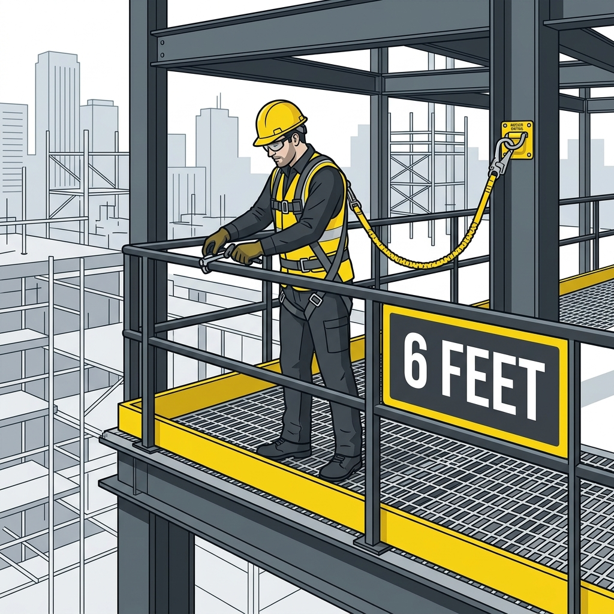

CSTR 014: Construction Safety | Presentation by Brandon
OSHA Subpart M (1926.501): Generally requires fall protection at 6 FEET or more above a lower level.
Key Standards to know:
• 1926.501: Duty to have protection.
• 1926.502: System criteria.
• 1926.503: Training requirements.

Eliminating the hazard (e.g., Guardrails, Covers).
Tethering a worker so they cannot reach the edge.
Stopping a fall safely after it occurs (e.g., PFAS).
• 38.5% of all construction deaths are fall-related.
• Construction accounts for nearly 50% of all fatal falls across all U.S. industries.
• Average of 360+ fatal falls per year since 2011.
• Impact: Families lose income and stability; employers face massive liability.
A single misstep or wind gust is all it takes.
The #1 tool involved in fatal falls.
Incomplete platforms are death traps.
The "Invisible" Hole.
Must support 5,000 lbs per worker attached.
Full-body ONLY. Body belts are banned for arrest.
Lanyards, lifelines, and deceleration devices.
PFAS is active protection. It requires 100% tie-off and constant inspection of webbing and hardware.
Warning: Improper setup (too much slack) can lead to hitting the ground before the system arrests.
Passive systems work 24/7 without worker intervention.
Guardrails: Top rail at 42" (+/- 3"). Must withstand 200 lbs of force.
Safety Nets: Installed within 30ft of the work level. Must be inspected weekly.
Must support 2x the weight of workers, tools, and materials.
Must be SECURED (so they can't be accidentally moved) and MARKED clearly (e.g., "HOLE" or "COVER").
If you aren't tied off directly above your head, you will swing like a pendulum, hitting structure or the ground with lethal force.
Free Fall (6ft) + Deceleration (3.5ft) + Safety Factor (3ft) + Height of Worker (6ft) = 18.5ft Total Distance Needed.
A 6ft lanyard often needs more room than you think!
The Incident: A worker was installing a soffit on a residential home. During a simple descent on a ladder (12 feet), he lost control and fell.
The Failure: Exposure during descent. Hazard exposure doesn't end when the "main job" is done.
The Lesson: 12 feet is enough to be fatal. Routine tasks are the deadliest because we drop our guard.
[ YouTube Placeholder: "Safety in Action" ]
13.5ft fall from a residential roof to a concrete driveway. Fatal outcome.
Contributing Factors: Roof pitch, hard landing surface, and lack of tie-off.
The Reality: "Not that high" is a dangerous myth. Gravity doesn't negotiate.
"I've done this a thousand times without a harness and I'm fine."
This mindset is why experienced workers are often at higher risk. Habitual shortcuts eventually lead to catastrophe.
A Job Hazard Analysis (JHA) should identify anchor points and rescue plans before the shift starts. Production pressure must never outweigh safety.
Fall protection is not optional. It is the law. It is your life.